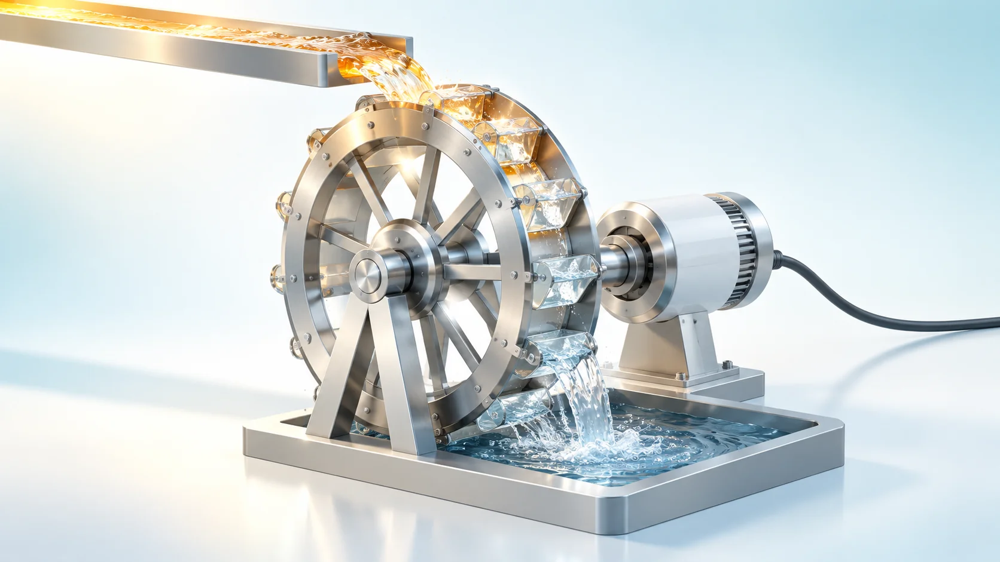
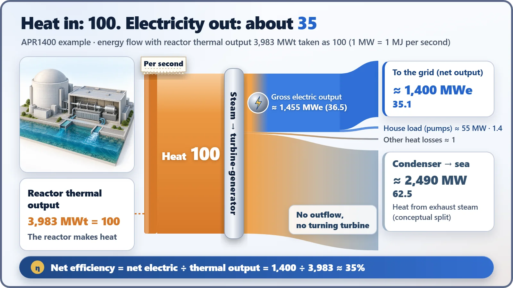
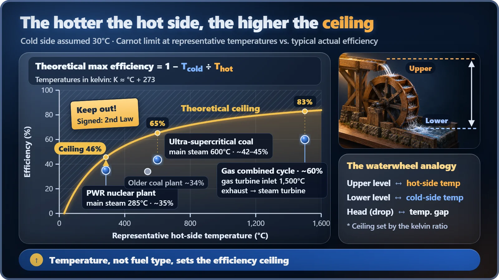

Plant Operation, Control & the Grid · 231
A Waterwheel Only Turns as Far as the Water Falls — Electric Output and Thermal Efficiency
Like a waterwheel, a heat engine must let heat fall from hot to cold. How high the steam temperature sits sets the ceiling on efficiency.

Thermal efficiency is electric output divided by thermal output. For a pressurized water reactor it is about 35%, so roughly two-thirds of the reactor's heat leaves through the condenser. That is not a leak but a requirement of every heat engine, and the ceiling is set by how hot the steam is, not by the kind of fuel. [1]
A receipt for one second
If a nuclear power plant printed a receipt for one second of operation, it would look something like this. Let's use the APR1400, South Korea's newest reactor design, as the example. [2]
Received: 3,983 megajoules of heat from the reactor
Sent out: about 1,400 megajoules of electricity to the grid
Remainder: about 2,580 megajoules
One megawatt means delivering one megajoule of energy every second, so this receipt simply says "thermal output 3,983 megawatts, electric output about 1,400 megawatts." The share of the heat that leaves as electricity is today's main character: thermal efficiency.
Thermal efficiency = electric output ÷ thermal output = 1,400 ÷ 3,983 ≈ 35%
Only a little over a third of the heat becomes electricity, and close to two-thirds goes somewhere else. That is why the phrase "about one-third efficient" follows nuclear plants around. But does that number really mean the plant is spilling energy everywhere?
Where did the "remainder" on the receipt go?
Start with where the energy travels. A reactor does not make electricity directly. Fission only makes heat. That heat boils water into steam, the steam spins a giant pinwheel called a turbine, and only then does the generator attached to the turbine make electricity.
Steam that has finished passing through the turbine still carries lukewarm heat. It has to be cooled in the condenser (a huge heat exchanger that turns steam back into water) so the water can return toward the reactor and keep the loop going. The heat from that steam is carried away by cooling water such as seawater. Most of the receipt's "remainder", about 62 to 63% of the thermal output, goes here.
The electricity share has a small story of its own. The generator terminals put out about 1,455 megawatts, but roughly 55 megawatts of that is used by the plant's own equipment, such as pumps. So engineers distinguish gross electric output (what leaves the generator) from net electric output (what goes to the grid). The last 1% or so is heat that seeps out a little at a time from generator and pipe surfaces. [2] [3]

Ask the waterwheel
So why not just send less heat to the condenser? Here an analogy from a young French engineer two centuries ago, Sadi Carnot, fits perfectly. He compared the steam engine to a waterwheel.
A waterwheel turns because water falls from a high place to a low one. Water that has turned the wheel must flow away downstream; if it can't drain and backs up, the wheel stops. And the power the wheel can extract depends on the head, the height the water falls.
A heat engine works the same way. It turns part of the heat into work as heat flows from a hot place to a cold one, and without heat flowing out to the cold side, the machine won't run. That a machine converting 100% of heat into work is impossible in principle is the Second Law of Thermodynamics. The heat going to the condenser isn't a leak; it's the water flowing out below the wheel. There is one difference, of course. Water leaves in the same amount it came in, but with heat, part of it becomes electricity and only the rest flows out. [1]
The theoretical ceiling set by the temperature "drop" fits in one line:
Maximum efficiency = 1 − (cold-side temperature ÷ hot-side temperature)
Temperatures here are absolute (kelvin, Celsius plus 273). Steam entering the APR1400 turbine is about 285°C, or 558 K. If the cold side is 30°C (303 K), the ceiling is 1 − 303/558 ≈ 46%. Real nuclear plants, with friction and other losses, stay lower at 33 to 36%. [2]
Lower than coal and gas because of a "height limit" on steam temperature
Then what about the claim that the latest coal plants and gas combined-cycle plants are more efficient than nuclear? The answer is how high the water falls from, in other words the hot-side temperature. With the same cold side, the higher the top, the higher the ceiling.
An ultra-supercritical coal plant (one that uses steam at pressures so high it is past the boiling boundary of water) reaches 42 to 45% with steam at about 600°C. A gas combined-cycle plant spins a gas turbine with combustion gas at about 1,500°C, then uses the exhaust heat to drive a steam turbine as well, for about 60%. Plug only the hottest temperature into the same formula and the ceilings come out at about 65% and about 83%, far above nuclear. (For combined cycle this is a simplified comparison, since heat arrives at several temperatures.) [5] [6]

The reason nuclear steam is relatively cool lies in the design of the pressurized water reactor. The primary coolant that cools the reactor is pressurized to about 150 times atmospheric pressure (15.5 megapascals) so it doesn't boil even at about 320°C. Handling water at much higher temperatures would mean raising the pressure further and making the vessel and piping far thicker, and the metal tubes enclosing the fuel must also keep their temperature margin. On top of that, the secondary-side water that receives heat in the steam generator boils at a lower temperature than the primary side, so the steam ends up at about 285°C. The height of the upper water is, in effect, fixed at the design stage.
Nuclear isn't uniquely low, either. Older subcritical coal plants also run at about 33 to 34%, similar to nuclear. Efficiency is set not by the type of fuel but by temperature design. [4]
What 35% tells you, and what it doesn't
A few quick mix-ups to clear up. First, thermal efficiency is not the capacity factor. Capacity factor is how continuously a plant ran over a year; thermal efficiency is the rate at which it turns heat into electricity while it is running. Also, when people say "a 1,400-megawatt nuclear plant", that number is usually electric output; the reactor's thermal output is nearly three times as much, about 4,000 megawatts.
And a single percentage point of efficiency is not trivial. At a thermal output of 3,983 megawatts, 1 point is about 40 megawatts, comparable to the electricity used by tens of thousands of homes. That's why plants upgrade turbines and care for their condensers to win back even fractions of a point. But a nuclear plant's output limit is set by the reactor's thermal output, so when a little less electricity comes out, operators do not turn up the reactor heat to make up the difference.
In short, the roughly 35% thermal efficiency of a nuclear plant isn't a confession that it "wastes two-thirds". It's a self-introduction: "a waterwheel running on 285°C steam." Every power plant that makes electricity from heat lives under the same law, and the only difference is how high the upper water has been raised.